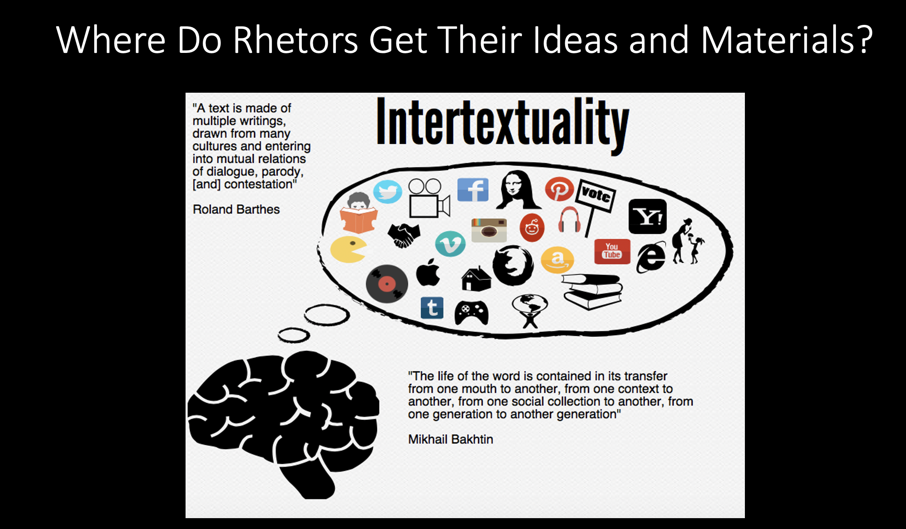

Rhetorical Knowledge
In this chapter, you will learn how to answer the following questions:
- What is rhetoric?
- Why is rhetoric important?
- What is digital rhetoric?
- What are rhetorical situations?
- What is rhetorical analysis?
- Why is rhetorical analysis important?
- What readings will help me understand these ideas and terms?
What is rhetoric
Rhetoric is a frame for thinking about how and why people use language and signs to communicate with each other. Rhetoric is like a swiss army knife for thinking. Rhetoric is a body of knowledge for understanding how people interact and persuade each other with discourse, with language, words, sounds, images, and paralinguistic activity. When you want to borrow money from your parents, you don't demand that they give you twenty dollars. You have to consider how they will react to your request and what will motivate them to give you the money. Have you been doing all of your chores? Have you been doing all of your school work? What evidence might you use to argue that you are deserving of the money? That is rhetoric. It is the plan you take and the words you use to persuade your parents to give you money. It requires you to consider a purpose (to get money) and an intended audience (your parents). In this case, you know your audience well so you may not need to conduct more research on them to learn more about how they think and what motivates them. You probably already know what motivates your parents, and you probably already have a plan for extracting resources from them. Maybe you use a certain tone of voice, or maybe you open your request for money with a compliment and reminder of all of the times you cleaned your room last year. These are rhetorical approaches and we use rhetoric all the time. But knowing what rhetoric is and how it works allows you to expand how you use it. Your parents may be easy to persuade because you know them so well and, well, they're your parents. But what about persuading your friends or a professor? How would you go about writing a letter to an employeer about a raise or a new job task? What approaches would you take to address these audiences? Rhetoric gives you a frame to consider these situations and to make and to make writing decisions.
In this chapter, you will use rhetoric as a frame to analyze a vareity of different texts and forms and consider how those texts and forms address specific audiences, for a specific purpose, within a specific context. Before I continue, I want to define the term text and the term discourse. In this webtext, a text can be a book, an article, a poem, a social media post, a chapter, a song, or any other form that uses words, sounds, images, animation, or signs to communicate a message. In this webtext, I use the term text generically to represent a variety of genres and forms people use to write and communicate with each other. You also will learn that rhetors, people who create texts, use discourse to communicate messages to audiences for a purpose and that there are constraints and limitations controlling a rhetor's ability to shape a message. Discourse is how we use language and writing to communicate. The term discourse means the ways we use language to communicate. Discourse could be written or spoken words. Discourse can take digital forms, too. A major part of this course is learning more about how people use a variety of different discourses for different purposes. The CWU Writing Program contends that learning about different discourse communities and writing across contexts will prepare you to write for a variety of situations you will encounter on and off campus. Below is an outline of this chapter and some of the main questions it will answer Barthes lays out six specific truths about texts and information in Image, Music, Text that we can build on for thinking about multimodal composing and analysis. I am using Barthes because his principles draw attention to the semiotic, rhetorical, and intertextual nature of textual construction that is characteristic of multimodal composing:
- A text is a multidimensional space in which a multitude of writings, none of them original, blend and clash.
- The text is a tissue of quotations.
- An author’s only power is to mix writings.
- The book is a tissue of signs.
- Texts are disentangled and not deciphered.
- To have an author of a text is to limit that text (Barthes, 146-47).
In “Writing and the Mind” David Olson contends that our understanding of language and how to generate meaning from that language are shifting. How we read and represent meaning from words is an evolutionary process and the product of a long evolving process for reading that continues to change and adjust according new technologies and what humans do with those technologies in relation to writing. Olson writes, “Writing systems represent only parts of meaning; it is simple illusion that it is a full model of what is said” (p. 121). Writing creates constructs. Constructs can position certain groups of people as favorable or privileged and therefore deserving over those who are not in these groups. Over time, a culture that reinforces this structure normalizes the differences and asserts authority over the systems that privilege. What access to discourses do you have? How does your access to those discourse limit or help you? How does language and culture work to position us and how do those positions limit or help us? What are discourses of cultural power and how are the gates set up to prevent accessing them?
Why is rhetoric important?
You are probably wondering why you should study rhetoric. You're probably asking yourself, how does rhetoric have value for me as a writer and thinker? Rhetoric provides writers with an important frame for understanding how writers create texts and readers interact and consume those texts. Rhetorical theories help writers and readers understand how contexts shape discourse and writing and why people make decisions and build knowledge. We often times forgot how important context is for meaning. It is important to consider why a given piece of writing or text was created and who created it. We need to know what motivated the production of a discourse and who benefits from the discourse and who does not. Writing and discourse solve problems and attempt to address an objective. It is important to know, to the best of our ability, what that objective is so we can understand why the rhetor is creating the discourse and who the discourse is intended to engage.
What are rhetorical situations?
Lloyd F. Bitzer was one of the first people to write about rhetorical situations in an article titled, "The Rhetorical Situation" in 1968. He wrote, "When I ask, What is a rhetorical situation?, I want to know the nature of those contexts in which speakers or writers create rhetorical discourse" (p. 1). Bitzer identified three characteristics of a rhetorical situation: exigence, audience, and constraints. We can understand what a rhetorical situation is if we break down its characteristics and discuss them carefully. An exigence is the purpose or reason a discourse and text is needed to communicate. You should ask yourself what is this text about? Why has it been written? What it is trying to achieve? These questions form the basis of stasis theory. Keith Grant-Davie discusses this idea more in his work on rhetorical situations. Rhetorical situations also have rhetors. Rhetors are individuals connected to the rhetorical situation, to the creation of the rhetorical situation, and they can many play many roles at once. A rhetor could be a parent and a teacher who writes for a local community blog about childcare services. Rhetorical situations also have audiences that are both real and imagined. Douglas Park contends that an audience is anyone who sees, heard, or reads a discourse or anyone that is effected by the discourse. There will be an intended audience the rhetor is trying to address but there will always be other audiences the rhetor cannot imagine or expect. In this chapter, you will develop a comprehensive understanding of the rhetorical situation and its characteristics (audience, exigence, constraints, arrangement, style, context, and rhetors), and you will learn how to use rhetorical knowledge to locate, analyze, and cite appropriate source material.
�� ��������������������� ��������������������� ���������������������� ��� �������������������"Rhetorical Situations" by Kimberly Smith, CWU Graduate Student
Historically, theories of rhetoric have focused on how the speaker constructs their argument or the argument itself. According to Bitzer, this leaves out an essential consideration, the rhetorical situation, which he defines as “a complex of persons, events, objects, and relations presenting an actual or potential exigence which can be completely or partially removed” by discourse that moves an audience to action (6). In this view, the rhetorical situation calls for an appropriate response. Without the situation demanding change, no discourse would exist. Bitzer describes three aspects of the rhetorical situation: the rhetorical exigence, audience, and constraints. The exigence, which serves as the rhetorical situation’s “organizing principle,” is a problem that can be solved or changed at least in part through discourse (7). The rhetorical audience is the subset of the audience that is both open to influence and capable of making change in response to the exigence (8). The rhetorical situation’s constraints are any material or immaterial factors that limit the ability to resolve the exigence, such as attitudes, beliefs, and facts (8). Without these components, a piece of writing cannot be rhetorical. Bitzer also emphasizes the rhetorical situation’s demand for an appropriate and timely response. Effective rhetorical discourse, then, must address the exigence or exigences at hand and do so at the most “propitious moment” (13). Ultimately, Bitzer demonstrates how rhetoric plays a vital role in affecting tangible change.
In “The Myth of the Rhetorical Situation,” Richard Vatz argues against Bitzer’s characterization of the rhetorical situation, which Vatz says overlooks rhetoric’s role in shaping the perception of a situation. Vatz emphasizes the importance of examining a speaker’s biases, beliefs, and interests when analyzing rhetoric. While Bitzer argues that rhetoric inevitably arises from certain situations, Vatz says that “No situation can have a nature independent of the perception of its interpreter or independent of the rhetoric with which he chooses to characterize it” (154). There are no situations that “require” a response. Instead, individual rhetors use their own judgement to decide which facts to prioritize (156). Then, when communicating about the situation, rhetors shape its meaning through creative interpretation (157). The adjectives and evocative language rhetors use when speaking about a subject are arbitrary choices disconnected from a tangible reality (157). As an example, Vatz considers the assassination of President Kennedy, noting that even the choice of the word “assassination” over “killing” shapes the perception of the event’s significance and the supposed need for discourse, despite the fact that the death of a president has very little impact on most Americans’ lives (160). Ultimately, by framing rhetorical response to a situation as a choice, Vatz’s argument makes the rhetor responsible for “what he chooses to make salient” (158). Therefore, when certain facts are emphasized over others, we can understand this as intentional shaping of meaning and not a measurement of inherent worth.
� � � � � � � � � � � � � � � � � � � � � � � � � � � � � � � � � � � �� � � � � � � � � � � � �� � � � � � � � � � � � � � �� �������������������� ������ � �������������������� ���������������� � � � � � � �� � � � � � � � � � � � � � � � � �� � � � � � � � � � � � � � � �� � � � � � � � ��� � � � � � � � � ��������������������� ��������������������� ���������������������� ��� �������������������� � � � � � � � � � � � � � � � � � � � � � � � � � � � � � � � � � � � � � � � �� � � � � � � � � � � � � � � � � � � � � � � � � � � �� �������������������� ������ � �������������������� ���������������� � � � � � � �� � � � � � � � � � � � � � � � � �� � � � � � � � � � � � � � � �� � � � � � � � ��� � � � � � � � � �� � � � �What is digital rhetoric?
Digital rhetoric might be best understood using Aristotle's five canons of rhetoric: invention, delivery, style, arrangement, and memory. Consider how these five canons function in print and digital forms. Start with delivery. How do we deliver writing and texts in print and digital forms? What does that mean? How does circulating a text effect how it is read and used? How do rhetors create digital texts knowing that the speed of the discourse has changed? What does the speed of discourse mean?
What is rhetorical analysis?
Rhetorical analysis is the application of rhetorical knowledge to the analysis of a text or rhetorical situation. Rhetorical analysis examines a rhetor caters to an audience, how the audience perceives and digests a text, how a context and moment in time shapes the creation, delivery, and digestion of a discourse. Individuals who conduct rhetorical analysis ask:
- why and for whom is a discourse created?
- What is the rhetorical situation?
- What is the exigence?
- Who are the rhetors?
- How are my representations affecting the way I'm reading the discourse?
- How many different roles does the rhetor play at once?
- Who are the intended audiences and how do I know that?
- What are the constraints I can see?
When examining purpose, think about what the rhetor is trying to do: to inform, to educate, to shock, to persuade, to entertain, to criticize. What questions is this discourse trying to resolve? What was at stake when the article was first published? How did other events going on during that time affect the text? What other event of cultural relevance might have shaped this text? What was going to happen or might happen as a result of the discourse?
Why is rhetorical analysis important?
Consider how rhetorical analysis allows you to move beyond the surface with your interpretation. Humans can only see so much at one time. Rhetorical analysis gives us a deeper perspective of a text and allows us to consider how it shapes cultural perception.
What readings will help me understand these ideas and terms?
The following readings will give you a more complete understanding of rhetoric, rhetorical situations, and rhetorical analysis.